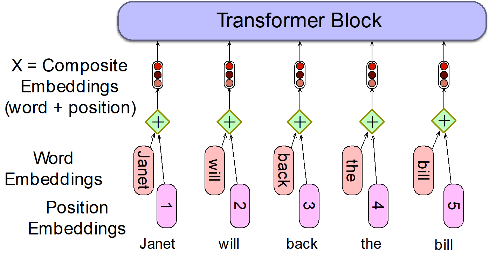
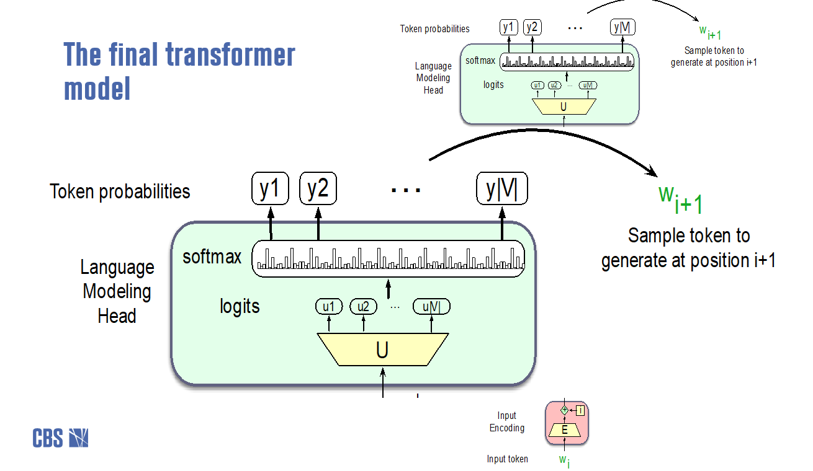

11 Natural Language Processing - Chapter 10
12 Chapter 10: The Transformer and Pre-trained Language Models
12.1 Background
12.1.1 Descartes and the Nature of Thought
Philosophers like Descartes have long debated what it means to “think.” In the context of artificial intelligence, this leads us to consider whether machines can truly understand or just simulate understanding.
12.1.2 The Turing Test
Alan Turing proposed a test to determine if a machine can exhibit intelligent behavior indistinguishable from a human. If a human evaluator cannot reliably tell the machine from a human based on their responses, the machine is said to have passed the Turing Test.
12.1.3 Singularity and AGI
The concept of the Singularity refers to a hypothetical point where artificial intelligence surpasses human intelligence, leading to rapid technological growth. AGI (Artificial General Intelligence) is the idea of machines that can perform any intellectual task that a human can.
12.2 The Challenge of Language
Language is complex and powerful. It allows us to express an infinite number of ideas using a finite set of words and rules. Sentences can have unbounded dependencies, such as:
“The cat that the dog chased ran away.”
Here, “the cat” and “ran away” are connected, even though other words intervene.
12.3 The Miracle of LLMs – 3 Key Insights
Bag of Words / N-grams
Early models represented text as unordered collections of words (bag of words) or short sequences (n-grams). For example, the sentence “The quick brown fox” as a bag of words is just {“The”, “quick”, “brown”, “fox”}.Word Embeddings and Self-Learning
Word embeddings map words to high-dimensional vectors that capture semantic relationships. For example:- “king” - “man” + “woman” ≈ “queen”
- “Paris” - “France” + “Italy” ≈ “Rome” These vectors capture analogies and relationships between words.
The Transformer
Transformers (covered in detail next) revolutionized NLP by allowing models to consider the entire context of a sentence, not just local word sequences.
12.4 Word Embeddings
Word vectors are rich representations of word meaning and usage. They capture relationships such as:
Gender:
“king” - “man” + “woman” ≈ “queen”Capital Cities:
“Paris” - “France” + “Italy” ≈ “Rome”Comparatives:
“big” - “bigger” + “small” ≈ “smaller”
These embeddings allow models to understand and manipulate language in a way that reflects real-world relationships.
What we need is a method to capture how words are combined to produce sentences and meaning—this is where models like the Transformer come in.
12.5 Transformers
12.5.1 The Problem with Static Embeddings
Traditional embeddings like word2vec are static:
A word always has the same vector, regardless of context.
Example:
“The chicken didn’t cross the road because it was too tired.”
What does “it” refer to?
A static embedding for “it” cannot capture the difference between “chicken” and “road” as possible referents.
Key Insight:
A word’s meaning should change depending on its context!
12.5.2 Contextual Embeddings
- Contextual embeddings assign a different vector to each word in each context.
- The meaning of “it” in the above sentence depends on the surrounding words.
How can we compute contextual embeddings?
→ Attention
12.5.3 Attention Mechanism
Intuition:
To build a contextual embedding for a word, we selectively integrate information from all other words in the sentence.
- Each word “attends to” other words, weighting them by relevance.
- The embedding for a word is a weighted sum of the embeddings of all words in the sentence.
Example 1:
“The chicken didn’t cross the road because it was too tired.”
Here, “it” likely refers to “chicken”.
Example 2:
“The chicken didn’t cross the road because it was too wide.”
Here, “it” likely refers to “road”.
At the word “it”, the model uses attention to decide whether “it” refers to “chicken” or “road”, based on context.
Formally:
Given token embeddings:
x₁, x₂, x₃, …, xₙ
For each word:
aᵢ = weighted sum of x₁, x₂, …, xₙ
Weights are based on similarity to xᵢ (the current word).
Result:
- Each word’s embedding is context-dependent. - Attention enables models to capture complex relationships and meanings in language.
12.5.4 Position Embeddings
Transformers have no inherent sense of word order.
Position embeddings solve this by assigning each position in the sequence a unique vector.
- For a sequence of length N, learn a position embedding matrix Eₚₒₛ of shape [1 × N].
- Each position (e.g., 1, 2, 3, …) gets its own embedding, learned during training.
- These are added to the word embeddings so the model knows the order of words.
Example:
The embedding for “fish” at position 3 is different from “fish” at position 17.

12.5.5 Output: Logits and Softmax
After processing, the model produces a logit (score) for each word in the vocabulary.
- Logits: Vector of size [1 × |V|], where |V| is the vocabulary size.
- Softmax: Converts logits into probabilities over the vocabulary.

12.5.6 BERT: Bidirectional Encoder Representations from Transformers
- BERT is an encoder-only Transformer.
- Goal: Produce a rich vector representation for each token in the input sequence.
- Not a chatbot; best for classification tasks (e.g., sentiment analysis, spam detection, ticket routing).
Example:
Given a sentence, BERT can classify its sentiment as positive or negative.
- BERT adds a special
[CLS]token to represent the entire sequence (sentence embedding). - For specific tasks, BERT is further trained (fine-tuned) with labeled data.
12.5.7 Decoder-Only Models (e.g., GPT)
- Goal: Generate new output sequences from input sequences (e.g., text generation, chatbots).
- Unlike BERT, these models predict the next word in a sequence.
Example:
Given “The weather is”, GPT might generate “sunny today in Berlin.”
Summary Table: Encoder vs Decoder Transformers
| Model Type | Example | Main Use | Special Token |
|---|---|---|---|
| Encoder-only | BERT | Classification, embeddings | [CLS] |
| Decoder-only | GPT | Text generation | None |
12.6 Large Language Models (LLMs)
Large Language Models (LLMs) are advanced neural networks trained to predict the next word in a sequence, enabling them to generate coherent and contextually relevant text.
12.6.1 From N-gram Models to LLMs
N-gram Language Models:
Assign probabilities to word sequences based on observed counts in large text corpora.
Example:
Given “The cat sat on the”, an n-gram model predicts “mat” if that sequence is common.LLMs:
Also assign probabilities to word sequences, but learn these probabilities by training on massive datasets and using deep neural networks (Transformers).
Example:
Given “The cat sat on the”, an LLM might generate “mat”, “sofa”, or “floor”, depending on context.
12.6.2 Why LLMs Are Powerful
- Even though LLMs are trained only to predict the next word, they learn a lot about language, facts, and reasoning.
- Many tasks can be reframed as next-word prediction.
Examples:
Sentiment Analysis
Prompt:
> The sentiment of the sentence “I like Jackie Chan” is
LLM likely predicts: “positive”Summarization
Prompt:
> Summarize: “The movie was exciting and full of twists.”
LLM might generate: “Exciting and unpredictable movie.”
12.7 Decoding and Sampling
When generating text, LLMs must choose the next word based on predicted probabilities. This process is called decoding.
12.7.1 Random Sampling
- The model samples the next word according to its probability.
- Most of the time, high-probability words are chosen, but occasionally, rare words are picked, which can lead to unexpected or odd sentences.
Example:
Prompt: “The sky is”
Possible outputs: “blue”, “clear”, “falling”, “delicious” (the last is odd, but possible with low probability).
12.7.2 Balancing Quality and Diversity
- Emphasize high-probability words:
- More accurate, coherent, and factual
– Can be repetitive or boring
- More accurate, coherent, and factual
- Emphasize middle-probability words:
- More creative and diverse
– May be less factual or coherent
- More creative and diverse
12.7.3 Top-k Sampling
- Choose a number k (e.g., 10).
- For each prediction, keep only the top k most probable words.
- Randomly sample from these k words.
Example:
If the top 3 words after “The sky is” are “blue”, “clear”, “cloudy”, only these are considered for sampling.
12.7.4 Top-p (Nucleus) Sampling
- Instead of a fixed k, keep the smallest set of words whose total probability exceeds a threshold p (e.g., 0.9).
- This set may be larger or smaller depending on the context.
Example:
If “blue” has 0.6, “clear” 0.2, “cloudy” 0.1, “stormy” 0.05, “red” 0.05, then top-p with p=0.9 includes “blue”, “clear”, “cloudy”.
12.7.5 Temperature Sampling
- Adjusts the “sharpness” of the probability distribution.
- Low temperature (τ < 1):
Makes the model more confident; high-probability words become even more likely. - High temperature (τ > 1):
Makes the model more random; low-probability words are more likely to be chosen.
Example:
With τ = 0.5, “blue” is much more likely than “cloudy”.
With τ = 2.0, “cloudy” or “red” might be chosen more often.
How it works:
Divide the logits (raw scores) by τ before applying softmax.
- τ = 1: No change
- τ < 1: Sharper distribution
- τ > 1: Flatter distribution
Summary Table: Decoding Methods
| Method | How it works | Effect |
|---|---|---|
| Random | Sample from all words by probability | Most diverse, least accurate |
| Top-k | Sample from top k words | Balances quality and diversity |
| Top-p | Sample from smallest set covering p prob. | Adaptive, flexible |
| Temperature | Adjusts probability sharpness | Controls randomness |
12.8 Pretraining
The big idea behind the success of language models:
- Pretrain a transformer model on enormous amounts of text.
- Fine-tune it for new tasks.
12.8.1 Self-Supervised Training
- Train models to predict the next word in a sequence.
- At each time step t, ask the model to predict the next word.
- Use gradient descent to minimize the prediction error.
Why “self-supervised”?
Because the next word in the text itself serves as the label—no manual annotation needed.
12.8.2 Language Model Training: Loss Function
- Use cross-entropy loss.
- We want the model to assign a high probability to the true next word.
- If the model assigns too low a probability, the loss is high.
- Training adjusts weights to increase the probability of the correct word.
12.8.3 Pretraining Data
- Common Crawl: Billions of web pages.
- Colossal Clean Crawled Corpus (C4): 156 billion tokens of English, filtered for quality.
- Includes patent documents, Wikipedia, news sites, etc.
12.8.4 What Does a Model Learn from Pretraining?
- Factual knowledge:
- “The author of ‘A Room of One’s Own’ is Virginia Woolf.”
- “The square root of 4 is 2.”
- Language patterns:
- “There are canines everywhere! One dog in the front room, and two dogs…”
- “It wasn’t just big, it was enormous.”
- Commonsense reasoning:
- “The doctor told me that he…”
Text contains enormous amounts of knowledge.
Pretraining on large, diverse text corpora gives language models their remarkable abilities.
12.9 Working with Large Language Models
12.9.1 Model Types
- Base Model: Result of pre-training on large text corpora.
- Instruct Model: Base model fine-tuned to follow instructions.
- Chat Model: Further tuned for dialogue and conversational tasks.
12.9.2 Key Settings
Temperature:
Controls randomness in output.- Low temperature (e.g., 0.2): More deterministic, focused responses.
- High temperature (e.g., 1.0): More random, creative outputs.
- Low temperature (e.g., 0.2): More deterministic, focused responses.
Top-p (Nucleus Sampling):
Only considers the smallest set of words whose cumulative probability exceeds p (e.g., 0.9).- Higher p: More possible words, more diverse outputs.
Max Length:
Maximum number of tokens in the generated response.Stop Sequences:
Specify tokens or phrases where generation should stop.Frequency Penalty:
Penalizes repeated words to encourage variety.Presence Penalty:
Penalizes new words to encourage sticking to the prompt context.
12.9.3 Prompt Structure
A good prompt often includes:
- Instruction: What you want the model to do.
Example: “Summarize the following text.” - Context: Extra information to guide the model.
Example: “The text is a news article.” - Input Data: The main content or question.
Example: “The movie was exciting and full of twists.” - Output Indicator: Desired format or type of output.
Example: “Summary:”
12.9.4 Common Tasks
- Text Summarization
- Information Extraction
- Question Answering
- Text Classification
- Conversation
- Code Generation
- Reasoning
12.9.5 Prompting Techniques
Zero-shot Prompting:
Ask the model to perform a task without examples.
Example:
> “Translate to French: ‘Good morning.’”Few-shot Prompting:
Provide a few examples to guide the model.
Example:
> “Translate to French:
> English: ‘Good morning.’ → French: ‘Bonjour.’
> English: ‘How are you?’ → French:”Chain-of-Thought Prompting:
Encourage the model to explain its reasoning step by step.
Example:
> “If there are 3 apples and you eat 1, how many are left? Let’s think step by step.”
12.10 Takeaways
- Transformers use attention to create context-aware word representations.
- BERT: Encoder model, best for classification and embedding tasks.
- GPT: Decoder model, best for text generation and chat.
- Prompt engineering is key to getting useful outputs from LLMs.